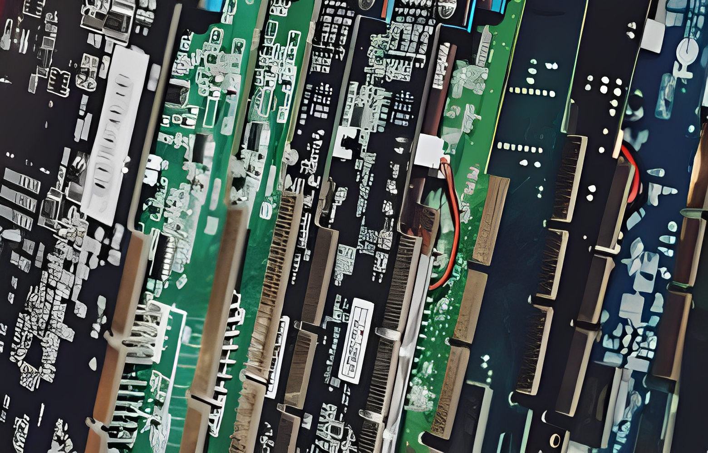
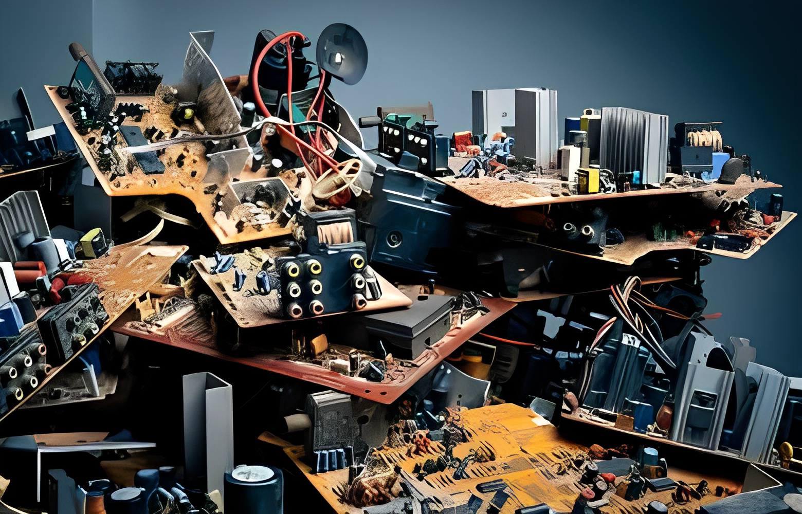
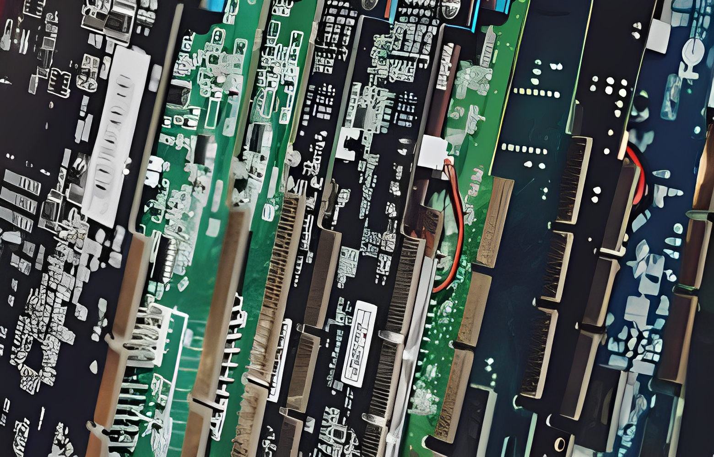
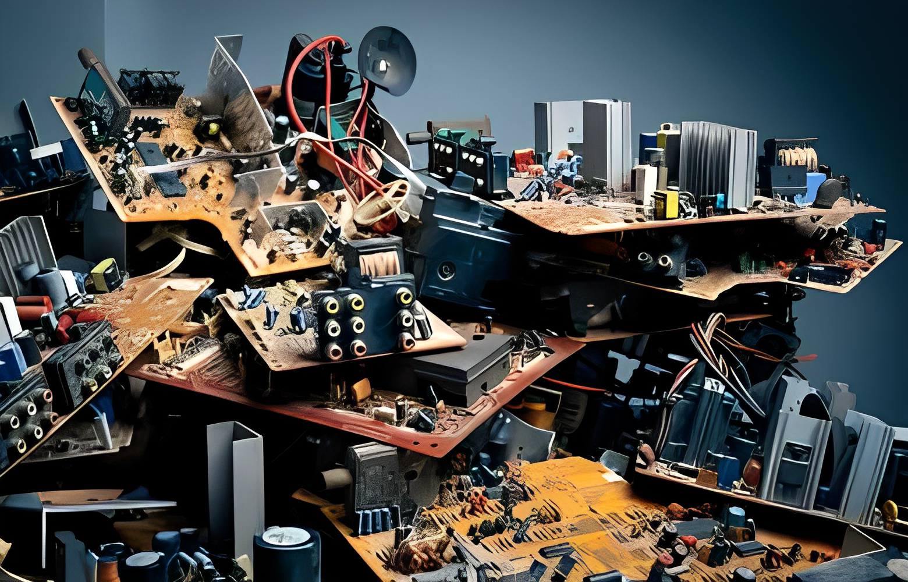

Artikel: Nachhaltige Entsorgung von alten Laptops: Eine umweltfreundliche Lösung
In unserer heutigen schnelllebigen Welt, in der technologische Fortschritte unaufhörlich voranschreiten, stehen wir vor einer zunehmenden Herausforderung: der nachhaltigen Entsorgung von Elektronik, insbesondere von alten Laptops. In diesem Artikel erkunden wir die Bedeutung dieser Problematik und stellen umweltfreundliche Lösungen vor.
1. Einführung: Die Bedeutung nachhaltiger Entsorgung von alten Laptops
Die Entsorgung von Elektronikschrott, insbesondere von alten Laptops, ist mehr als nur eine Frage der Bequemlichkeit. Sie hat direkte Auswirkungen auf unsere Umwelt und Gesundheit. Im Einführungsteil erläutern wir, warum dieses Thema von großer Bedeutung ist.
2. Warum ist die Entsorgung von Elektronikschrott wichtig?
Elektronikschrott enthält wertvolle Materialien, aber auch gefährliche Substanzen. Hier beleuchten wir die Gründe, warum eine ordnungsgemäße Entsorgung unerlässlich ist und welchen Beitrag dies zur Ressourcenschonung leisten kann.
3. Gefahren von unsachgemäßer Elektronikentsorgung
Wir werfen einen Blick auf die potenziellen Gefahren, die durch unsachgemäße Entsorgung von Elektronikschrott entstehen können. Von giftigen Chemikalien bis hin zu Umweltauswirkungen zeigen wir, warum verantwortungsbewusstes Handeln erforderlich ist.
4. Die umweltfreundliche Alternative: Recycling von alten Laptops
Ein zentraler Punkt des Artikels ist die Vorstellung des Recyclingprozesses für alte Laptops. Wir erklären, wie dieser Prozess nicht nur die Umwelt schützt, sondern auch wertvolle Ressourcen zurückgewinnt.
5. Wie funktioniert der Recyclingprozess?
Hier gehen wir detailliert darauf ein, wie der Recyclingprozess für alte Laptops abläuft. Von der Sammlung bis zur Wiederverwendung von Komponenten geben wir einen Einblick in die verschiedenen Schritte.
6. Wiederverwendung von Elektronikkomponenten: Ein nachhaltiger Ansatz
Ein nachhaltiger Ansatz zur Elektronikentsorgung beinhaltet auch die Wiederverwendung von intakten Komponenten. Wir zeigen, wie dies nicht nur ökologisch, sondern auch ökonomisch sinnvoll ist.
7. Schadstoffe in alten Laptops: Warum sie richtig entsorgt werden müssen
Welche schädlichen Substanzen können in alten Laptops gefunden werden? Und warum ist ihre ordnungsgemäße Entsorgung so wichtig? Hier geben wir Antworten auf diese Fragen.
8. Die Rolle von Unternehmen bei der nachhaltigen Entsorgung von Elektronik
Unternehmen tragen eine große Verantwortung bei der Elektronikentsorgung. Wir beleuchten, welche Maßnahmen Firmen ergreifen können, um ihren Beitrag zu einer nachhaltigen Zukunft zu leisten.
9. Gesetzliche Bestimmungen und Standards für die Elektronikentsorgung in Deutschland
In Deutschland gibt es klare Vorschriften zur Elektronikentsorgung. Wir geben einen Überblick über die relevanten Gesetze und Standards, die die umweltfreundliche Entsorgung von Elektronik sicherstellen sollen.
10. Tipps für Verbraucher: Wie Sie Ihren alten Laptop umweltfreundlich entsorgen können
Praktische Tipps für Verbraucher: Wie können Sie sicherstellen, dass Ihr alter Laptop umweltfreundlich entsorgt wird? Hier teilen wir Ratschläge und Anleitungen.
11. Initiativen und Programme zur Förderung nachhaltiger Elektronikentsorgung
Es gibt zahlreiche Initiativen und Programme, die sich für nachhaltige Elektronikentsorgung einsetzen. Wir stellen einige dieser Organisationen vor und erläutern ihre Ziele.
12. Die ökonomischen Vorteile der nachhaltigen Elektronikentsorgung
Nachhaltigkeit zahlt sich auch wirtschaftlich aus. Wir beleuchten die ökonomischen Vorteile für Unternehmen und die Gesellschaft, die durch nachhaltige Elektronikentsorgung entstehen.
13. Bewusstseinsbildung: Warum es wichtig ist, die Menschen über nachhaltige Entsorgung aufzuklären
Ein entscheidender Schritt zur nachhaltigen Elektronikentsorgung ist die Bewusstseinsbildung. Wir diskutieren, warum Aufklärung und Bildung der Schlüssel zur Veränderung sind.
14. Häufige Missverständnisse über Elektronikentsorgung klären
Es gibt viele Missverständnisse rund um das Thema Elektronikentsorgung. Hier räumen wir mit gängigen Fehlinformationen auf und klären auf.
15. Fazit: Gemeinsam für eine nachhaltige Zukunft
Zusammenfassend betrachten wir die wichtigsten Punkte und ermutigen Leser, aktiv zur nachhaltigen Elektronikentsorgung beizutragen. Eine nachhaltige Zukunft ist nur gemeinsam möglich.
FAQs zur nachhaltigen Entsorgung von alten Laptops:
- Kann ich meinen alten Laptop einfach im normalen Müll entsorgen?
Nein, das ist nicht empfehlenswert. Elektronikschrott gehört in spezielle Sammelstellen, um eine umweltfreundliche Entsorgung zu gewährleisten.
- Welche Materialien können aus einem recycelten Laptop wiedergewonnen werden?
Recycelte Laptops können Materialien wie Metalle, Plastik und seltene Erden enthalten, die für die Herstellung neuer Geräte wiederverwendet werden können.
- Welche gesetzlichen Vorschriften gelten für die Elektronikentsorgung in Deutschland?
In Deutschland regelt das Elektrogesetz die umweltgerechte Entsorgung von Elektronikgeräten. Es legt Richtlinien für Hersteller und Verbraucher fest.
- Wie kann ich sicherstellen, dass meine persönlichen Daten vor der Entsorgung gelöscht werden?
Vor der Entsorgung sollten Sie alle persönlichen Daten von Ihrem Laptop löschen. Es gibt auch spezielle Programme zur Datenvernichtung.
- Kann ich meinen alten Laptop spenden statt ihn zu entsorgen?
Ja, viele Organisationen akzeptieren Spenden von gebrauchten Laptops. Dies ermöglicht eine sinnvolle Wiederverwendung.
 


